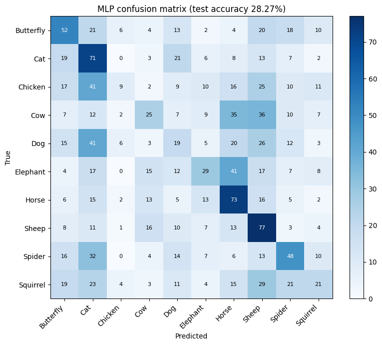
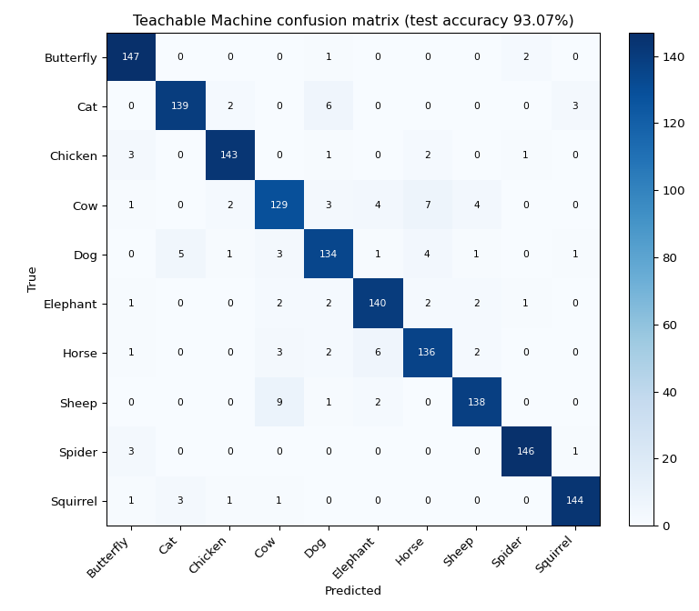

1 · Give it an image
or click to choose, or paste (Ctrl+V)
No image yet. Pick a sample below.
Sample test images (first image of each class)
Images are centre-cropped to a square. The MLP sees them as 64 × 64 pixels, Teachable Machine as 224 × 224.
Where did each model look?
A grey square slides across the image. Wherever covering the image makes a model less sure of its answer, that region mattered to it (occlusion sensitivity). Red = the model relied on this region.
Stress the image
Which model breaks first?
The 1,500 test images
Neither model saw these during training. Click any image to analyse it in the other tabs.
Results on the 1,500 held-out test images
| MLP | Teachable Machine | |
|---|---|---|
| Test accuracy | 28.27% | 93.07% |
| Macro F1 | 0.261 | 0.931 |
| Parameters | 1,581,898 | 539,308 |
| Input | 64 × 64 × 3 → 12,288 values | 224 × 224 × 3 |
| Architecture | Dense 128 → 64 → 10 | Pre-trained CNN + classifier |
| Epochs · batch · learning rate | 15 · 32 · 0.0001 (identical for both) | |
| Training time | ≈ 1 min | ≈ 4 min |
Per-class accuracy
Confusion matrices


Why such a gap?
An MLP flattens the picture into one long list of numbers, so it loses the idea of shape: ears, legs and wings look like scattered pixels. Teachable Machine starts from a convolutional network that already learned edges, textures and object parts from millions of images and only learns to map them to these 10 animals (transfer learning).